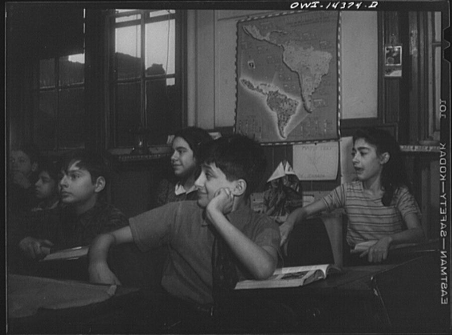
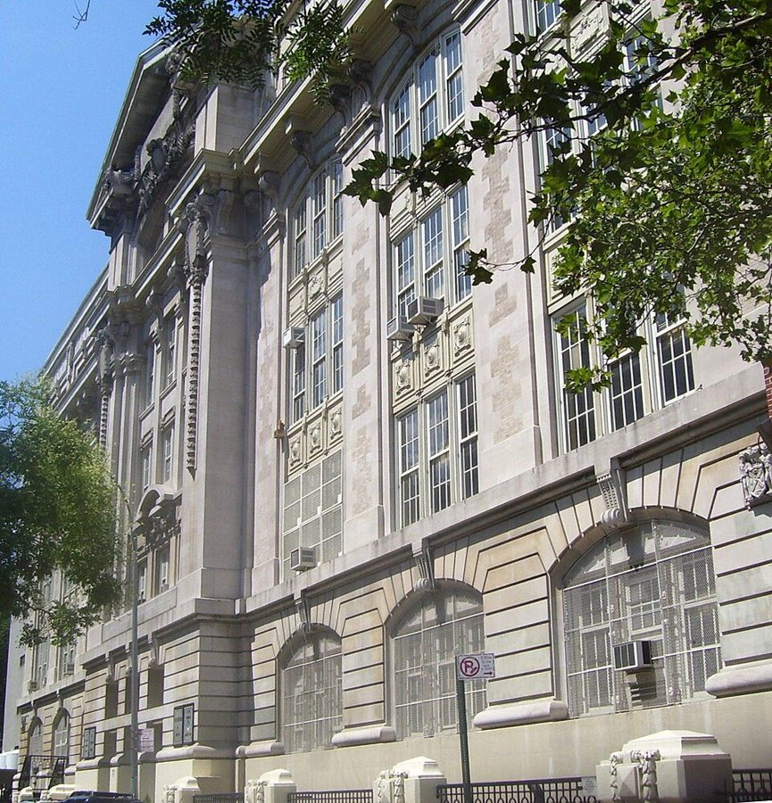
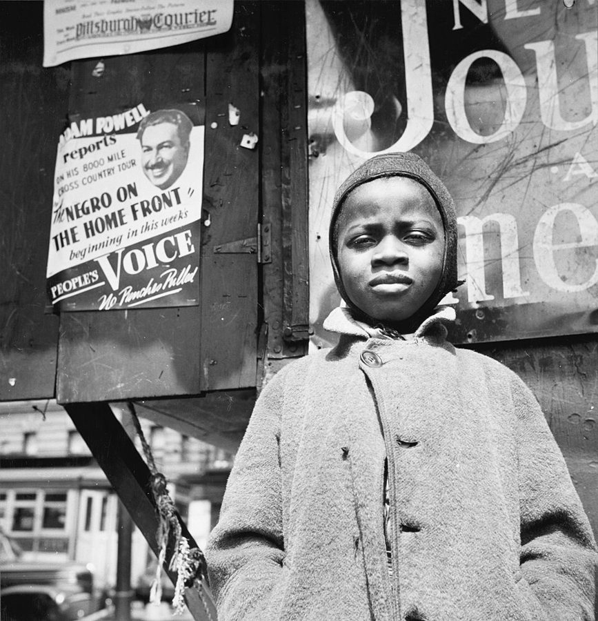

这一章在做什么
上一页他在哈莱姆读完小学，靠 Mom 签字转进了一所好一些的初中。这一页是初中三年，12 岁到 14 岁，纽约在打仗。十三个小节几乎都是课堂上的短场面，一节一位老师。
读的时候分两类看：哪些老师他服气，哪些老师他顶回去；再留意他顶嘴时总是拿什么当依据。
1942.9
1943.2
1943.9
1944.2
1944.9
1945.2
7AR
7BR
8BR
9A2
9B
高中 下一页
快班（R 班），三个学期
九年级，普通班
和 Mr. Leonard 冲突
被调出快班，快班随后取消
12 岁
14 岁
第 11–15 节在七年级，第 16–17 节在 8BR，第 18–23 节在九年级
本站示意图，按书里给的年月推算。班号的读法见下面「班号怎么读」；九年级下学期的班号书里没写。
出场的人
这一页的人几乎都只有一个姓。同学直呼姓，老师带 Mr.、Mrs.、Miss，听的时候靠这个分辨谁是大人。
Rosen /ˈroʊzən/，男，同学 成绩和他不相上下，连错都错在同一处。先是同桌，九年级分到不同的班，成了他较劲的对象。
Valdez /vælˈdez/，男，同学 小团伙的第三个男生，恶作剧的搭档。第 18 节和 Rosen、作者一起去考 Brooklyn Tech。
Hannah 女，同学；另一个女生叫 Lilly 小团伙里的金发女生。第 15 节的风波和第 16 节的认错人都和她有关。
Miss Karoff 8BR 的班主任 年轻，沉得住气，他服气的老师。留堂时和他一来一往地斗嘴。
Mr. Leonard /ˈlenərd/，8BR 新来的数学老师 在教室四面墙上钉满规则卡片。第 17 节的冲突因他而起。
Mrs. Sennett 公民课老师，兼升学指导 九年级时负责决定谁可以去考重点高中，一开始就不看好他。
Mrs. Bloom 9A2 的班主任，教科学 情绪大起大落，把学生分成「对的」和「不对的」两种。作者承认她教会了他科学推理。
Laurence /ˈlɔːrəns/，男，高一届的黑人学生 Mrs. Bloom 的得意门生，放学后在图书馆打工。作者不喜欢他。
Mr. Feinberg /ˈfaɪnbɜːrɡ/，九年级数学老师 第 22 节里为三分之差和他争执的那位。和 Mr. Leonard 不是一个人。
Eddie Mapp 上一页出场，这里只被提到 家里一直拿来和他比的那个大一点的男孩，已经在读 Stuyvesant。
还有几个只露一面的。 Scarlotti（名 Fred）是被偷袭的大个子同学；Seward 是要去打工的大个子同学；Mrs. Collins 教英语；Dr. Davidman 是校长，Dr. 指博士学位，不是医生。
家里人这一页只在第 21 节集中出现：Mom、Ruth 和他同住，Birdie、Lacy 另住，Herman 从南方来过一次。
背景：作者默认你知道的事
班号怎么读
那时纽约的公立学校九月、二月各开一个学期，每学期升一级，所以每个年级分 A（上）、B（下）两段。后面的数字是按成绩分的班，1 最好。R 是 Rapid Advancement，比 1 班还高一档的快班：三个学期学完四个学期的课，所以读完 7AR、7BR 直接进 8BR。
8
B
R
班：R、1、2、3…
学期：A 上，B 下
年级：八年级
快班取消以后
八年级下 九年级上
8BR
8B1
8B2
9A1
9A2
9A3
粗线是作者：从 8BR 被调到 9A2，
和原来的 1 班成了同学
本站示意图。书里说的 the “one” class、the “two” class 就是 1 班、2 班。
初中，和「四十个族群」

1943 年 1 月，纽约曼哈顿下城一所公立学校的阅读课。不是作者的学校，年份相同。墙上挂着地图，第 19 节那场演讲靠的就是这样一张。
Marjory Collins，公有领域，维基共享资源 Junior high school 管七到九年级，夹在六年小学和三年高中之间。J.H.S. 43 在哈莱姆边上的白人街区，学生里有犹太人、波多黎各人，还有 1930 年代从欧洲逃出来的难民家庭的孩子。作者第一次进了白人占多数的学校，全班三十来人，黑人四个。
要考才能进的高中

曼哈顿东 15 街的 Stuyvesant 高中旧校舍，摄于 2010 年。学校 1992 年迁走。作者 1945 年进的就是这座楼。
Beyond My Ken，CC BY-SA 4.0，维基共享资源 纽约的公立高中多数就近入学，少数几所全市招考：Stuyvesant（1904 年建校，当时只收男生）、Brooklyn Tech（1922）、Bronx Science（1938）偏数理，Music and Art（1936）收艺术学生。不收学费，只看考试。Stuyvesant 读作 /ˈstaɪvəsənt/，中文常译史岱文森。
北（上城） 南（下城）
中央公园
家，145 街（哈莱姆）
J.H.S. 43，129 街
隔 16 条街，一公里多
Stuyvesant，东 15 街
Brooklyn Tech
河对岸，布鲁克林
离家 130 条街，十公里上下
本站示意图，把曼哈顿横过来画，只按街号摆位置。曼哈顿的东西向街道从南往北编号，二十条街大约一英里。
打仗的那几年

1943 年 5 月，哈莱姆的一个报童。身后的广告在预告一组报道，题目是「后方的黑人」。作者这一年 13 岁，也住在哈莱姆。
Gordon Parks，公有领域，维基共享资源 美国 1941 年 12 月参战，这一页从头到尾都在战时，书里却只从侧面带到：Lacy 进了军工厂，常常加班；物价涨，住房紧，家里把房间分租出去；孩子的恶作剧叫「突击队式」。邮局 1943 年起在大城市的地址里加分区号，所以他报地址时特意念出「31」。
IQ 和墨卡托
墨卡托投影的世界地图。顶上正中那块白色的格陵兰看上去和非洲差不多大，实际面积只有非洲的十四分之一左右。
Mdf，公有领域，维基共享资源
IQ 测验那时是美国学校分班的常用工具，平均分定为 100，120 以上大约是前一成。书里它出场两次，两次都替他说了话。墨卡托投影是制图师 Mercator 在 1569 年发表的画法：经线纬线都是直线，航海定方向方便，代价是越靠近两极面积放得越大。
留个记号：后面还会回来
这一页作者自己下判断的地方不多，下面四处是他明说了的，或者从上一页接过来的线。
Eddie Mapp 这把尺子 第 11、18 节 上一页带他进图书馆的男孩。家里拿 Eddie 压他，他就拿 Eddie 给自己定目标：先是快班，再是 Stuyvesant。
没说出口的感受 第 14 节 老师说这个班在走下坡路，升学考试的结果正相反。作者在这一节末尾自己点了题，是这一页少有的一句议论。
独来独往 第 15 节 小团伙散了以后，他说自己在此后的求学路上基本都是一个人。后面读到大学、研究生院时可以回来对照。
和 Mom 是两个世界 第 21 节 上一页第 2 节埋下的线，这里说得更重了：钱越来越紧，Lacy 也变了。这条线在下一页收紧。
词与短语
词条按书里出现的顺序排，小标题是原书用 • • • 隔开的各节。斜体小字是那句话里的几个词，在 Kindle 里搜它就能跳到那一句。单个的生词长按就能查，这里收的主要是词典帮不上忙的。
第 11 节 · 进了 43 中
not yet part of Harlem
… was not yet part of Harlem …
那时还不算哈莱姆
Harlem 不是行政区，是黑人聚居的那一片，边界一直在往外推。第 14 节的 the ghetto continued to expand 说的是同一件事。
self-congratulatory
… a little too self-congratulatory about how …
自我感觉太好
just a little too 是往轻里说，意思是「相当」。
a way of life
… fighting was not a way of life. …
过日子的常态
不是「生活方式」那么中性：指天天如此、躲不开。
my size
… most white kids my size seriously …
和我个头差不多的
名词短语直接当定语。这一段后面又用了一次，是个限定条件：比他大的不算。
a fluke
… to disregard it as a fluke. …
蒙上的，碰巧
读 /fluːk/。挨了一拳也不当回事，他说这份自信本身就帮了忙。
clobber
… I was to being clobbered sometimes, …
被狠揍一顿
口语。第 13 节还有一次。
invidious comparisons
… a stop to invidious comparisons with …
拿人比来比去、叫人不痛快的那种比较
读 /ɪnˈvɪdiəs/。下一页还会原样出现一次。
squelch
… they were squelched early on, though …
一早就被压了下去
本义是踩烂泥的声音。early on = 一开始。
patronizing
… toward taking a patronizing attitude toward …
居高临下、带着照顾口气的
和「光顾」无关。指白人同学可能把黑人同学当成需要让着的人。
venture
… “Thomas Sowell?” I ventured helpfully. …
试着说了一句
venture 作「说」的动词：冒昧插一句。helpfully 是装出来的热心。
kid around
… had just been kidding around, but …
闹着玩
call my shot
… if I had called my shot. …
事先报出结果，然后真的做到
原是台球的说法：出杆前先说打哪个球进哪个袋。他其实是瞎猜的。
第 12 节 · Rosen 和印刷课
copy from
… thought I was copying from him. …
抄他的
两人分数、错处都一样，老师只往一个方向怀疑。作者没有说原因。
throwaway courses
… One of these throwaway courses, as …
可以丢开不管的课
throwaway 本义是用完就扔的东西。
shop course
… was a shop course in printing. …
工艺课（这里教排字印刷）
shop = workshop，车间。美国中学的动手课统称 shop，和商店无关。
box of type
… sharing a big box of type …
一大盒铅字
type 是活字。铅字按字母分格存放，格子叫 compartment，放乱了就排不快。
the laughing stock
… was the laughing stock of the …
笑柄
say for yourselves
… you have to say for yourselves?” …
（你们）还有什么可辩解的
老师、家长训人的固定问法，并不真等你回答。
copy off each other
… that we copied off each other.” …
互相抄
口语里 off 当 from 用。这句接的是前面老师怀疑他抄 Rosen 的事。
smart remark
… “For that smart remark,” the printing …
耍嘴皮子的话
smart 这里是没大没小、顶嘴，不是夸他聪明。
stay after school
… can stay after school today, Sowell. …
放学留下来（挨罚）
留堂。第 17 节换了个说法：be kept in 。
第 13 节 · 恶作剧
little tin angels
… by no means little tin angels. …
（绝不是）什么小天使
tin 是铁皮，带「样子货」的意思。by no means = 绝不。
afoot
… another was almost always afoot, and …
正在暗中进行
常和 mischief、plot 搭配。
at least my share
… involved in at least my share. …
我干的只多不少
share 是「该我的那一份」。又是往轻里说。
get a rise out of
… always got a rise out of …
把……逗得跳脚
Francis 是男名，Frances 是女名，读音一样，只差一个字母。
commando-style raid
… was staging a commando-style raid on …
突击队式的偷袭
commando 是二战中才流行开的词，指英军的突击队。整段用的都是作战报告的词：operation、executed。
flying block
… Valdez threw a flying block into …
飞身撞上去
block 是美式橄榄球里用身体挡人的动作。
just made it
… and sometimes we just made it—we …
差一点就没跑掉
make it = 办到、赶上。just 是「刚刚好」。
a sport
… I thought you were a sport.” …
开得起玩笑的人
不是「运动」。偷袭了人家还反过来怪人家小气。
第 14 节 · 快班「走下坡路」
pace-setters
… intellectual, but also social, pace-setters. …
带头的，做表率的
本义是赛跑里领跑定速度的人。
conduct sheets
… most daily conduct sheets free of …
每日操行记录单
conduct 是操行、纪律，这一页出现多次。free of = 一条也没有。
in deadly earnest
… these traditions in deadly earnest, but …
认真得要命
deadly 只是加重语气。
scoff at
… me—openly scoffed at it all. …
公开表示不屑
going downhill
… class was going “downhill”—perhaps a safe …
在走下坡路
这一段里用了三次，第 17 节末尾还有一次。留意是谁在说、说的是班还是街区。
air publicly
… safe way to air publicly their …
公开说出来
air 作动词：把意见、不满拿出来讲。
the ghetto
… as the ghetto continued to expand …
黑人聚居区（指哈莱姆）
原指欧洲城市里划给犹太人住的区，在美国转指少数族裔集中的贫困街区。读 /ˈɡetoʊ/。
in point of fact
… But, in point of fact, our …
而实际上
= in fact，更正式，后面跟的是反驳。
by almost any index
… intellectually by almost any index available. …
不管拿哪个指标量
index 这里是指标，不是索引。
unspoken feelings
… of what unspoken feelings can do. …
没说出口的情绪
这一节的落点。指上一段说的那种担心。
第 15 节 · 小团伙散了
a lone wolf
… pretty much a lone wolf throughout …
独来独往的人
color-blind
… The relatively color-blind atmosphere also began …
不看肤色的
本义是色盲，这里是褒义。
save me the trouble of
… would save me the trouble of …
省得我还得（动手）
把威胁说成一句客气话。
read into
… deeper meanings were read into the …
被人看出了「别的意思」
read A into B ：在 B 里读出本来未必有的 A。被动句，没说是谁。
第 16 节 · Miss Karoff
home-room teacher
… had a very good home-room teacher. …
班主任
home room 是每天早上点名、听通知的那间固定教室，各科再分头去上。
adroit
… both firm and adroit in handling …
手法巧，会对付
读 /əˈdrɔɪt/。
take attendance
… already there and was taking attendance, …
点名
bland expression
… with a completely bland expression. …
一点表情也没有
bland 本义是味道淡。
imperturbable
… Miss Karoff was always imperturbable. …
什么都惊动不了她
读 /ˌɪmpərˈtɜːrbəbl/，重音在第三个音节。这一节的关键词。
if I ever find out
… if I ever find out who …
要是让我查出来是谁……
话没说完，句尾直接点了他的姓。意思是：我知道是你。
misdemeanors
… my miscellaneous misdemeanors in other classes …
各种小过失
法律上指「轻罪」，拿来说课堂捣乱是戏用。
people will begin to talk
… people will begin to talk!” …
人家要说闲话了
talk 单用 = 传闲话。这是说男女之间的套话，他拿来说留堂。
live with
… to learn to live with the …
只好认了，忍着过
不是「和……同住」。
第 17 节 · Mr. Leonard
at the opposite pole
… At the opposite pole from Miss …
正相反的一头
pole 是南北极的极。
petty
… a very petty and insecure man. …
小心眼，爱在小事上计较
insecure 不是「不安全」，是心里没底、怕人不服。
have time on my hands
… and had time on my hands, …
闲着没事
他给自己插嘴找的理由就是这个。第 21 节同一个短语用在 Mom 身上。
take your word for it
… “I take your word for it,” …
你说有就有吧
字面是「我信你的话」。这里是挖苦：规则多到你自己都找不着。
get out of hand
… rapidly began getting out of hand. …
失控
keep in
… whole class would be kept in …
（放学后）留下不让走
considerable bulk
… backed his considerable bulk against the …
他那不小的身躯
用郑重的词说人胖。
the wisest decision
… probably the wisest decision he made …
他那天最明智的决定
言下之意：不让开的话，Seward 会动手，而且那天他别的决定都不明智。
dripping with sweet reasonableness
… a voice dripping with sweet reasonableness, …
一副通情达理到发腻的口气
dripping with ：多得往下滴。故意气人的时候才这么说话。
transom
… could open a large transom that …
门上方的气窗
老式楼房的门顶上有一扇可以翻开的小窗，通风用。ledge 是窄台。
livid
… He was livid. As I proceeded …
气得脸色发青
不是 lively。
postal zone numbers
… Postal zone numbers were new then …
邮政分区号
「New York 31, N.Y.」里的 31。老师说要给家里写信，他把地址连分区号一起报上，是在表示不怕。
bring charges against
… “I’ll bring charges against you!” he …
正式告你一状
charges 是指控，这里指向校方提出处分。
a major subject
… for failure in a major subject. …
主科
注意这个「不及格」是怎么来的：操行扣分，而且是按快班的线算。
第 18 节 · 报哪所高中
guidance counseling
… a class in guidance counseling, conducted …
升学指导
负责的人叫 guidance counselor，美国中学至今都有。
civics
… conducted by the civics teacher, Mrs. …
公民课
讲政府怎么运作、公民的权利义务，读 /ˈsɪvɪks/。
at length
… class by explaining at length that …
长篇大论地
不是「最后」。
screen
… was going to screen us before …
先筛一遍
screen 作动词：筛选。学校自己先挑人，再放去考。
a reflection on
… which was a reflection on the …
让（学校）脸上无光
不是「反思」。a reflection on 某人 ：照出他的不是。
throw up her hands
… Mrs. Sennett threw up her hands …
两手一扬：真拿你没办法
不是举手投降，更不是呕吐。exasperation 是被气得没脾气。
sneering
… records, her sneering expression turned to …
讥笑的
下文是 cold resentment：她看到了数字，没说一个字，脸色从讥笑变成了冷冷的不快。
if not diabolical
… question was clever, if not diabolical. …
说刁钻都不过分
A, if not B ：是 A，甚至够得上 B。diabolical 本义是魔鬼般的。
leak
… the other teachers leaked to me …
私下透露
第 19 节 · 没准备的演讲
pet projects
… One of her pet projects was …
她最上心的事
pet 作形容词：心爱的、特别偏好的。和宠物无关。
was due
… when my talk was due, I …
轮到该交（该讲）
程序员熟悉的 due date 的 due。
Mercator Projection
… caught my eye were: “Mercator Projection.” …
墨卡托投影
读 /mərˈkeɪtər/。见上面「IQ 和墨卡托」。
crack up
… to keep from cracking up. …
笑喷
这里是憋不住笑，不是崩溃。
let it sink in
… each statement to let it sink …
让人把话听进去
他停顿其实是在想下一句说什么。
helter-skelter
… instead of rushing along helter-skelter.” …
慌慌张张，乱成一团
all was well that ended well
… all was well that ended well. …
结局好，就算都好
套的是莎士比亚的剧名 All’s Well That Ends Well ，改成了过去时。
第 20 节 · Mrs. Bloom 和 Laurence
the bane of my existence
… The real bane of my existence …
我的克星，最让我头疼的人
固定说法，带夸张。bane 读 /beɪn/。
protege
… was her special protege and they …
得意门生
法语来的词，读 /ˈproʊtəʒeɪ/，听书时不容易对上拼写。
double standard
… resented the implied double standard in …
双重标准
他不满的是：同样水平的白人学生得不到这么多关注。这个词在他后来的著作里常见，这里是十三四岁时的反感。
tinsel glory
… arrogant and preoccupied with tinsel glory. …
亮闪闪的虚名
tinsel 是圣诞树上挂的金属箔条，好看而不值钱。
groom
… was to be groomed by her …
栽培成（接班人）
本义是给马刷毛。
resignation
… me in puzzlement and resignation, and …
认了，不再指望
不是辞职。
call on
… she called on me on my …
点我起来回答
不是「拜访」。
size her up
… I had sized her up by …
摸清了她是个什么人
apis mellifera
… “the common bee, or apis mellifera …
西方蜜蜂的拉丁学名
读 /ˈeɪpɪs məˈlɪfərə/。全班笑，是因为他一开口就超出了课本。entomology 是昆虫学。
lost the battle
… had lost the battle but she …
这一仗她输了（可是没有罢休）
拆的是成语 win the battle but lose the war 。
have something on the ball
… you do have something on the …
有两下子
出自棒球：投出的球带着劲道和变化。前半句「没有插图嘛」是在讥讽。
the good fortune
… the good fortune is the other …
走运的（是你，不是我）
作者说「算你走运，这是图书馆」，Laurence 把话原样顶了回来。
horseplay
… there was some horseplay in our …
打打闹闹
as a matter of fact
… “No, as a matter of fact, …
说实在的（我不会捡）
老师在下命令，他用讨论问题的客气话一句句回过去，上一句是 Not necessarily （那可不一定）。
that piece of cardboard
… with that piece of cardboard in …
您面前那张硬纸片
指成绩单（report card）。他的意思是：算数的是校务处的档案。
第 21 节 · 家里
blue baby
… children was a “blue baby,” his …
「蓝婴」
先天性心脏病的婴儿，血里缺氧，皮肤发青。
take a toll on
… a family took a toll on …
把人磨损了
toll 本义是过路费。
war plant
… Now working in a war plant, …
军工厂
plant 是工厂。
never seemed to get over
… He never seemed to get over …
一直没回过神来
Herman 在第 1 章里和他互相看不顺眼。这一句是反话：对方原以为他是个野孩子。
initiated into the mysteries of
… never initiated into the mysteries of …
从没人告诉我（家里的钱是怎么回事）
原是说入教、入会时传授秘仪，用在家用开销上是玩笑。
sole support
… that Ruth was our sole support, …
唯一挣钱养家的人
enjoy poor health
… of those people who enjoyed poor …
以多病为乐
把 enjoy good health 换了一个词的老笑话。下半句说她老说自己要死了，结果活到九十多。
nurse her neuroses
… she could nurse her neuroses, build …
把自己的心病养着
nurse 是精心养护。slights 是怠慢，brood over 是闷着想。
pinched
… seemed to become more pinched as …
（手头）更紧了
ice box
… food in an old-fashioned ice box. …
放冰块的冷藏柜
不插电，靠送冰人送来的大冰块。前半句的 refrigerator 才是电冰箱。
take in roomers
… York, we began taking in roomers. …
收房客
上一页他和 Mom 是别人家的 roomer，现在倒过来了。
第 22 节 · 三分
quickie
… begin with a few “quickie” problems, …
几道抢答的小题
in my feet
… can do them in my feet.” …
我用脚都算得出来
对着上一句的 in his head （心算）造的。
brashness
… It was typical adolescent brashness, but …
不知天高地厚的狂劲
demand a recount
… percent in math—and demanded a recount. …
要求重新计票
recount 是选举用语，拿来说一门课的分数。
put upon
… was being very much put upon. …
受了天大的委屈，被人欺负
long-suffering 是长期忍气吞声的。两个词写的都是老师的表情，是反话。
第 23 节 · 毕业典礼
in attendance
… school auditorium, with parents in attendance. …
到场
下一句只有七个词，说的是他家来了谁。
not about to
… I was not about to go …
才不会，休想让我
不是「不打算马上」。否定的 be not about to 表示坚决不干。
parade
… on stage and let them parade …
把（我）拉出去展览
parade 作及物动词：领着人或东西走一圈给大家看。
budge
… that I wasn’t going to budge, …
挪一下
几乎只用在否定句里。
a decent sort
… Dr. Davidman was a decent sort, …
是个厚道人
后半句 he wasn’t the issue ：问题不在他。
stonewalling
… of us were just stonewalling, began …
装聋作哑，硬扛着不动
stage whispers
… hiss at us in stage whispers …
压着嗓子、其实谁都听得见的「悄悄话」
本是戏剧术语：演员对观众说的旁白式耳语。
值得停下来的句子
“We will just have to learn to live with the scandal.”— 第 16 节，Miss Karoff 头也不抬地回答。本站译：「这桩丑闻，咱们只好学着忍了。」
他先开了个玩笑：老这么两个人留在教室里，人家要说闲话的。她没有训他，也没有笑，顺着玩笑的逻辑把话接完了。learn to live with 是「学着与之共处」，scandal 是「丑闻」，两个大词用在留堂上。
这一页里他服气的老师都有这个本事：接得住他的话。对照下一节的 Mr. Leonard，那位一被顶嘴就去墙上找规则。
After what I had been put through, I was not about to go up on stage and let them parade me.— 第 23 节，毕业典礼。本站译：他们那样折腾过我之后，我才不会走上台去，让他们拿我出来展览。
put 某人 through 是让他吃苦头，这里用了被动的过去完成时，没说是谁，指的是这三年里几位老师的做法。them 也没有先行词，同一拨人。
parade 是关键：学校要的是把考上的学生摆出来给家长看，他不肯当展品。全章顶嘴顶了那么多次，最后一次他一个字没说，只是坐着不动。
检查一下理解
先在心里答，再点开。答错的那题，回书里把那一节再读（或再听）一遍。
1. 他进快班（7AR），是自己争取来的吗？ 不是。小学毕业时他要过一个 R 班的名额，那只是为了堵住家里拿 Eddie Mapp 比他的嘴。进了初中，学校按 IQ 记录挑人，另外三个同学马上答应，他说不想换，最后是被学校直接改派过去的。
2. 老师们说这个快班在「走下坡路」，作者认为他们班成绩真的不如上一届吗？ 不认为。他举的是升学考试：上一届十人考 Stuyvesant 只中一人，他们这一届报什么中什么。他的看法是，老师先不满这个班对课外荣誉满不在乎，又担心学校和街区在变，这些没说出口的情绪带偏了对学生能力的判断。
3. 他被调出快班，是因为数学学得不好吗？ 不是。Mr. Leonard 不敢正式告他，因为自己也违了规，于是以操行为由扣数学分，扣到按快班标准算不及格（按全校标准仍然及格）。主科不及格就得离开快班。随后快班整个取消，各班顺次改号，他落在 9A2。
4. Brooklyn Tech 的考试，Mrs. Sennett 告诉他的结果是什么？实际呢？ 她告诉 Rosen 和 Valdez 得了满分，对他只说「通过了」。三个人出考场时对过答案，全都一样。两个星期后别的老师私下告诉他，他也是满分。
5. Mrs. Collins 把他讲墨卡托投影的演讲当成范例，同学们为什么拼命忍笑？ 因为全班都知道他上台前根本没有题目，是转头看见墙上地图临时抓的。老师夸他「熟到不用看稿」「每句话后停顿」，其实没稿是因为没准备，停顿是在想下一句。老师是真心表扬，不是讽刺。
6. 毕业典礼上他不肯上台，是在和校长作对吗？ 不是。他特意说校长为人不错，问题不在校长。他不愿意的是被学校当成成绩摆出来，而这所学校里有几位老师一路在压他。来看他毕业的家人只有 Birdie，她看见他肩膀在抖，知道他在偷笑。